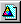

Creating and Using Projects¶
In this chapter we look more closely at projects. We take a break from Reversi and develop some new projects of our own. To do this, we use Open Dylan’s New Project wizard. We also look at some of the options and settings associated with projects, and some of the features of the project window.
Creating a new project¶
We now create a new project for a simple “Hello World” application that will run in an MS-DOS console window.
We create the project by clicking the New Project () button in the main window, or by choosing File > New in any window.
Click the New Project button in the main window.
The New Project wizard appears.

The New Project wizard.¶
The New Project wizard guides us through the process of creating a new project. Across a series of pages, it gathers the following information:
The type of target file (.EXE or .DLL) that should be created when the project is built.
The name of the project and a folder on disk for storing its files.
The libraries and modules that the project will use.
Documentation keywords to be used in the project’s various files.
When we have supplied all the information that it requires, the wizard creates a new project, consisting of the following files:
A project file. The file has the same name as you give the project, but with a .HDP extension.
A Dylan source file, called library.dylan, that defines a library with the same name as the project
A Dylan source file, called module.dylan, that defines a module with the same name as the project
An initial Dylan source file into which we can write application code. The file has the same name as the project, but with a .DYLAN file extension.
Some application types contain:
A Dylan source file containing some useful constant and function definitions. The file has the same name as the project, with -info appended, and with a .DYLAN file extension. So for a project called Hello, the file would be Hello-info.dylan.
The project -info.dylan file appears only if you ask for template code to be included in your project.
And for GUI applications that use the DUIM library, there can also be:
A Dylan source file, called frame.dylan, that defines the application’s DUIM frame and a set of default menus.
The frame.dylan file appears only if you ask for template code to be included in your project. We discuss this in Projects for GUI applications.
For more information on DUIM, see Building Applications Using DUIM and the DUIM Reference.
Specifying the type of the project¶
The first page in the New Project wizard asks us to specify the kind of target we want to build from the project.
In the Project type box, the default option is “GUI Application (EXE)”. Our “Hello World” application is going to be an MS-DOS console application, so we need to change this option setting from the default.
Select “Console Application (EXE)” in the Project type box.
Click Next.
We now move to the second page.
Specifying the project name and location¶
The second page in the New Project wizard asks us to supply a name for our project, and to specify a location for the automatically generated project and source files.

The New Project wizard’s second page.¶
When naming projects, remember that Open Dylan uses the name given to a project as a basis for naming some of the files that make up the project, so the name should only contain characters that are valid in Windows file names.
In addition, the project name is used as the default name of the library and module that the project defines, so unless you change those names (with the Advanced… dialog; see Advanced project settings), the project name must also be a valid Dylan name.
Here we can also specify, using the “Include any available templates” check box, that the wizard should generate skeleton code for our project if a template for the project type is available.
Template code provides a skeleton version of the sources for a project of the type we are creating. We can then modify the skeleton code to fit our needs. The content of the skeleton code not only reflects the type of project selected on the first page, but also our answers to subsequent questions that the wizard asks.
Since we want to develop a simple “Hello World” application, we are going to call the project Hello.
Type Hello in the Name box.
As you type Hello, the Location box fills in a folder for the automatically generated project and source files.
The New Project wizard will create the folder in the Location box automatically if it does not already exist.
Click Next.
We now move to the third page.
Choosing the libraries that the project uses¶
The next stage in creating our project is to decide which libraries and modules it is going to use. The third page of the wizard offers three different ways to do this. Each of the three options is described below.
Minimal If we choose this the project uses the Functional-Dylan library only.
Functional-Dylan is a convenience library that combines the standard Dylan library with a language extensions library called Functional-Extensions. Thus Functional-Dylan provides a “Harlequin dialect” of Dylan. (The standard Dylan library, without Harlequin’s extensions, is also included in the set of Open Dylan libraries.)
Simple If we choose this the wizard presents a series of choices we can make to determine which libraries and modules the project should use.
Custom If we choose this the wizard presents a table of all the libraries and modules available, and allows us to select the ones we want our project to use.
All our Hello project needs to do is print a text message saying “Hello World” to the standard output in an MS-DOS console window. The Functional-Dylan library contains a function to do this, so for our project we can select the Minimal button and move on to the next page in the wizard.
Select Minimal in the Use Libraries box.
Click Next.
We now move to the final page.
The final page in the New Project wizard¶
The final page of the New Project wizard gives us the option of supplying text for the documentation keywords Synopsis:, Author:, Copyright:, and Version:.
If we supply values for these keywords, the wizard adds them to the top of each of the files that it creates for the project, including the project file itself. With the exception of Synopsis:, these keywords are defined as part of the Dylan interchange format, on page 23 of the DRM. Synopsis: is a not a standard Dylan interchange keyword, but an additional one that Open Dylan accepts.

The New Project wizard’s third page.¶
Change the default keyword text as you wish, or turn the keywords off altogether.
Click Finish.
Now we have supplied all the information the wizard asks for, it creates the new Hello project and opens it.
Examining the files in the Hello project¶
The Hello project. shows our new Hello project.
The default view shows the Sources page, where we can see the files library.dylan, module.dylan, and Hello.dylan.
The Hello project.¶
The library.dylan file defines a Dylan library called Hello, which uses the library harlequin-dylan. The module.dylan file defines a module of the Hello library which is also called Hello, and which uses various modules exported from the harlequin-dylan library.
The Hello.dylan file is an initial file into which we can write the code for our project. It contains a default start function called main, and the last lines of the file call this main function. For more on the purpose of this function, see The project start function.
We can add further files to the project as we see fit. But our “Hello World” application is trivial: we can write the code into Hello.dylan now, and our work will be done. The application will simply call the function format-out on the string “Hello World\n”. The format-out function (exported from the simple-format module) formats its argument on the standard output.
Open the Hello.dylan file in the editor.
Add the following code in the definition of main:
format-out("Hello World\\n");
Choose File > Save to save the change to Hello.dylan.
Now we can build our “Hello World” application.
Choose Project > Build in the project window.
Test the application by choosing Project > Start.
An MS-DOS console window appears, into which “Hello World” is written. Then a notifier dialog appears to confirm that the console application has terminated.
You can find the hello.exe file in the bin subfolder of the Hello project folder we specified on the second page of the New Project wizard. See Projects on disk for more details of where build products reside.
Projects for GUI applications¶
In this section, we define a more typical project. This project will be a for GUI application. To do this, we take a different path through the New Project wizard. We look at the project files that the wizard creates, then build and run our GUI application.
Creating a GUI project¶
First, we create the new project for our GUI application.
Click the New Project () button in the main window.
On the first page, we want to specify the project type.
Select “GUI Application (EXE)” in the Project type box.
Click Next.
We now move to the second page of the wizard.
Here, we want to name the project and specify a folder for its files.
Name the project GUI-App and choose a location for it.
The New Project wizard can set up some skeleton program code for our project, according to the project’s characteristics as we specify them. Template code is not relevant for all kinds of projects—for instance, our Hello project would not have benefited from any more initial program structure than it had—but the wizard will include any that is relevant if we check the “Include any available templates” box.
Make sure the “Include any available templates” box is checked.
We ignore the Advanced… button again.
Click Next.
We now move to the third page of the wizard.
When we created the Hello project, we chose the Minimal option here, to use only the Functional-Dylan library. Our GUI application also needs to use other libraries for access to the native window system.
Select “Simple” in the Use Libraries box.
Click Next.
We now proceed through a series of pages allowing us to specify our project requirements in high-level terms, without knowing the names of specific Open Dylan API libraries.
The wizard will make our project’s library definition use the right libraries and modules to do what we ask on these pages, and will include suitable template code in the project sources. Thus the Simple option is a useful way to create projects until you are more familiar with the libraries that Open Dylan offers.
On the first page we can specify the what I/O and system support we want in our project. For each option, the wizard shows which libraries the project will use.
Leave the default settings on this page as they are, and click Next.
The next page is for specifying GUI support details. Here, we can decide whether we want to do the window programming for the application by using DUIM, Open Dylan’s high-level GUI toolkit, or by using the Win32 API libraries described in the C FFI and Win32 library reference. We want to use DUIM in this project.
Select “Dylan User Interface Manager (DUIM)”.
Click Next.
Now the wizard offers different pages, which we don’t explain here. We will keep clicking Next until we get to the last page of the wizard. This is the page for specifying source file headers, as we saw in The final page in the New Project wizard.
Click Next until the last page of the wizard appears.
If you made any changes to this page last time, they will have been preserved. Whenever you click Finish, the wizard saves all these headers (except Synopsis: ) and some other details, and reinstates them next time you create a project. See Saving settings in the New Project wizard for a list of the details that the wizard saves.
Make any changes you want to here, and then click Finish.
The wizard creates the new GUI-App project and opens it.
Examining and building the new GUI project¶
Now, we examine the template code that the wizard has set up for us in the GUI-App project sources.
The GUI-App project contains the same basic set of files as Hello. There is a library.dylan file, a module.dylan file, and a GUI-App.dylan file. In addition, there is a GUI-App-info.dylan file and a frame.dylan file.
The GUI-App-info.dylan file appears whenever you choose “GUI Application (EXE)” as the target type on the first page of the wizard. It contains some simple code that you might want to use for identifying your application and its version number.
The frame.dylan file defines a DUIM frame for the application and a set of default menus. Frames are DUIM’s way of representing application windows. More knowledge of DUIM is necessary to understand the code in frame.dylan properly, but we can start by seeing what the code actually does when we build the project. All projects including template code can be built without requiring any further work.
Choose Project > Build in the GUI-App project window.
Choose Application > Start.
An application window appears.

The GUI-App skeleton application.¶
We can see from the window that the template code creates a skeleton application with File, Edit, and Help menus. There is even some functionality attached to the basic application. If we choose File > New, an editor pane is initialized, into which we can type. The other File and Edit menu commands have their standard effects. The Help > About command uses some of the constants from GUI-App-info.dylan to identify the application as “GUI-App Version 1.0”.
Creating a project using the Custom library option¶
The New Project wizard’s Use Libraries page has a Custom option which allows complete control over the libraries and modules a project will use. This section explains how to choose libraries and modules using this option.
After selecting Custom and clicking Next, the wizard shows a page with three list panes. We can make selections from each list pane.
At first, the only list enabled is the Choose Library Groups list. Because there are many libraries available in Open Dylan, the wizard puts libraries into groups according to their functionality. We can select a group to see the list of libraries it contains, and then choose a library from the list. When we select a group, the wizard displays the library list in the second pane.
Libraries are grouped by functionality in a fairly broad fashion, so some libraries appear in more than one group because they fit more than one description. For instance, the C-FFI library appears in both the “Interoperability” group and the “Win32” group.
Notice the check next to “Core”, indicating that “Core” is the only group from which a library or libraries will be used by default. Note that when using Custom library selection to create a project with any GUI or OLE features, you must explicitly specify the GUI and OLE libraries you wish to use.
If we select “Core”, we can see which libraries from that group would be used in a default project.
Select “Core” in the Library Group list.
Functional-Dylan is the default library for use in new projects.¶
So, by default, a project would use the library Functional-Dylan. (Note that Functional-Dylan is the default library for use in new projects. Your copy of Open Dylan may have more library groups.)
If we now select Functional-Dylan in the Library list, we can see which modules from the Functional-Dylan library a default project would include.
Select “Functional-Dylan” in the Library list.
Default modules from Functional-Dylan for use in new projects.¶
Although the list shows that the Dylan and Functional-Extensions modules are not used, they are actually used indirectly, since the Functional-Dylan module is simply a repackaging of those two modules.
Remember that, in Dylan, the library is the unit of compilation, and modules are simply interfaces to functionality within a library. By deciding not to use a particular exported module, you will import fewer interfaces into your application, but the delivered application will not be any smaller on disk, or in memory when it is running.
Saving settings in the New Project wizard¶
Whenever you click Finish on the last page of the New Project wizard, the wizard stores some of the choices and text-field settings you made so that they are available next time you create a project. The details that are saved persistently are as follows.
The parent of the folder in the Location box.
The parent folder is saved in the expectation that you will want to create several projects in sibling folders.
In the Advanced… dialog (see Advanced project settings), the contents of the Start Function box and the setting of Compilation Mode.
The setting of the “Include any available templates” check-box.
On the last wizard page:
The contents of the Source File Headers boxes, except for Synopsis:.
Synopsis: is not saved because it is likely to change with each new project.
Nothing from the first page is saved.
Advanced project settings¶
The Advanced… button on the first page of the New Project wizard leads to the Advanced Project Settings dialog. The dialog has five sections.
The Library and Module Names section allows you to specify names for your project’s main library and module. The default value in both cases is the name of the project.
The remaining sections—Start Function, Version Information, Compilation Mode, and Windows Subsystem—all control settings that you can both set here and change after creating a project by choosing Project > Settings…. See Project settings for details.
Adding, moving, and deleting project sources¶
In this section we discuss how to insert files into a project, how re-order them, and how to delete them from the project.
Inserting files into a project¶
To insert a new file or subproject into a project, choose Project > Insert File… in the project window. The project window prompts you with the Insert File into Project dialog, through which you can find a file to insert.
The file you choose will appear below the currently selected file in the list, unless you insert a subproject (a .HDP file), which will appear at the bottom of the list.
You can insert any file into a project; if the compiler does not know what to do with it, it ignores it. For instance, you can insert .TXT files into a project, and the compiler will skip over them.
When you have chosen your file, the project window places the file below the file currently selected in the list.
If you have added a subproject (a .HDP file), remember that you still need to edit the library and module definitions in your project to import from the new subproject.
Moving the position of a file within a project¶
To move a file to a new position in a project, select the file in the Sources page and use Project > Move File Up and Project > Move File Down.
Deleting files from a project¶
To delete a file from a project, select the file in the Sources page and choose Project > Remove File. You could also select Edit > Cut, Edit > Delete, or the scissors toolbar icon.
Open Dylan asks you if you are sure you want to delete the file from the project, because you cannot undo the operation. Note that the file is not deleted from disk, just removed from the Sources list in the project. You can always put it back with Project > Insert File.
Note
The project window’s Definitions page shows the definitions that were part of the project when it was last compiled. The list is taken from the current compiler database for the project. If you delete a source file from the project, the definitions from that file stay on the Definitions page until you rebuild the project, which causes the compiler database to be updated.
The project start function¶
The New Project wizard always adds a start function to the end of the last file in the project.
The Dylan language does not require that a program define an explicit start function, such as main in C or Java. However, when you are debugging or interacting, Open Dylan finds it useful to know what you consider to be your program’s start function. It allows the name of your start function to be recorded in its project information. By default, this name will be main, and corresponds to the main function that the New Project creates by default in the project-name .dylan file for all new projects. However, you are free to change the name if you like—there is nothing special about it.
The project-name .dylan file for all new projects will contain a definition of main and a call to it. Projects that include template code will contain this definition of main :
define method main () => ()
start-template()
end method main;
Projects that do not include template code will contain this definition:
define method main () => ()
// Your program starts here...
end method main;
For both kinds of project, the project-name .dylan file will end with this expression:
begin
main();
end;
The name of the Start Function is one of the project settings you can change in the Project > Settings… dialog. It appears on the Debug page in the Start Function section. The default name is main, but you can change it to any valid Dylan name you like. If you do so, make sure to replace the call to main with a call to your new start function. The source file is not updated automatically.
Note that you can make the wizard use a different start function name in new project files by changing the default setting in the Advanced Project Settings dialog. Click Advanced… on the second wizard page to produce the dialog. In this case, the generated project code will call the correct new name without requiring you to make a change by hand.
The debugger uses the start function name to know where to pause a
program that you start up in interaction mode with Application >
Interact or the Interact ( ) toolbar button, or in debugging
mode with Application > Debug. When you start a program either way,
the debugger allows the program to execute normally, but sets a
breakpoint on the start function so that interaction or debugging begins
at a point where the entire program has already been initialized.
) toolbar button, or in debugging
mode with Application > Debug. When you start a program either way,
the debugger allows the program to execute normally, but sets a
breakpoint on the start function so that interaction or debugging begins
at a point where the entire program has already been initialized.
If no start function is nominated for a project, the program pauses precisely before it exits but after everything in it has executed. This is usually what we want for a DLL, but not for an application.
Note
To be sure that you can access all the definitions in your application when you start it up in interaction mode, the call to main must come after all the definitions in the project. Typically, this means the call must be the last expression in the last file listed in the project. Otherwise, the application will be paused before all its definitions have been initialized, and interactions involving its definitions could behave in unexpected ways. See Application and library initialization for more information on this topic.
Project settings¶
The Project > Settings… dialog allows you to set options for compiling, linking, and debugging projects. There are separate pages for each category, each described below.
Compile page¶
The Project > Settings… dialog’s Compile page controls the compilation mode setting for the current project. Any project can be compiled in one of two modes: Interactive Development mode, and Production mode. See Compilation modes for details of the modes.
Link page¶
The Project > Settings… dialog’s Link page controls whether a project is linked as an executable or as a DLL, and what its name will be. It also allows you to specify version information for the target, a base address for it, and the Windows subsystem it runs in.
Note
The default linker used in Open Dylan is a GNU linker. If you own Microsoft Developer Studio, you can use the Microsoft linker instead. To change the default linker, go to the main window and choose Options > Environment Options…, then choose that dialog’s Build page.
Target File section of the Link page¶
The Project > Settings… dialog’s Link page has a Target File section that contains the name of the project target and the type of the target. The default target name is derived from the name of the project. Note that the name will always end in .EXE or .DLL according to the target type, regardless of any extension you give to the target’s name.
Base Address section of the Link page¶
The Project > Settings… dialog’s Link page has a Base Address section that allows you to specify a base address for your target file. This is the address at which the target will be loaded into memory.
Windows 95, Windows 98, and Windows NT all provide a default base address, one for EXEs and one for DLLs, and will also relocate the target automatically if there is no room for it at that address. You can provide a value in the Base Address if you would like the target to be loaded at a particular location. The value should be specified in hexadecimal, using Dylan’s #x prefix: for example, #x1000000.
Version Information section of the Link page¶
The Project > Settings… dialog’s Link page has a Version Information section that allows you to add major and minor version numbers to a DLL or EXE. The values in this section are recorded in the DLL or EXE that the project builds. Open Dylan uses them at compile time and run time to determine if compatible versions of Dylan libraries are in use. See Versioning for details.
Windows Subsystem section of the Link page¶
The Project > Settings… dialog’s Link page has a Win32 Subsystem section that allows you to specify that the target should run in the “Windows GUI” (WINDOWS) subsystem or the “Windows Console” (CONSOLE) subsystem. You may wish to change this value if you change the code of a console-mode project to make it create its own windows, or vice versa.
The default for a project created in the New Project wizard as a “Console Application (EXE)” is to run in the Windows Console subsystem, while the default for a project created as a “GUI Application (EXE)” is to run in the “Windows GUI” (WINDOWS) subsystem.
Debug page¶
The Project > Settings… dialog’s Debug page allows you to specify a command line with which to execute the project target, and the start function for the project.
The command line facility is especially useful for testing console applications from within the development environment. If there are values in the Command Line section of this dialog when you run a project target with Project > Start (and similar commands), Open Dylan uses them to execute the application. It creates a new process from the executable named in the Executable field and passes it the arguments from the Arguments field. Thus the values in these fields should form a valid MS-DOS command line when concatenated.
See The project start function for details of the start function.
Another use of the Command Line section is to arrange to test and debug DLLs and OLE components. See Debugging techniques for a description of these debugging techniques.
Project files and LID files¶
Open Dylan’s project files can be exported in a portable library interface format called LID (library interchange description). Harlequin and other Dylan vendors have chosen LID as the standard interchange format for Dylan libraries. LID files describe libraries in a flat ASCII text format for ease of interchange between different Dylan systems. The Core Features and Mathematics reference volume describes the LID format. LID files must have the extension .LID.
Opening a LID file as a project¶
When you open a LID file in the development environment, it is converted into a project file and opened in a project window. (This process does not modify the original LID file on disk.)
In order to open a LID file as a text file in an editor, open the LID file using File > Open and select the file type filter “Dylan Library Interchange Descriptions (as text)” before clicking Open.
Exporting a project into a LID file¶
To export a project as a LID file for use in other Dylan implementations, use File > Save As and choose the file type “Dylan Library Interchange Descriptions”.
Note that a LID file created by export will list source files by name only, and without paths. In addition it will not contain any of the project settings, any files that are not Dylan source files (.DYLAN files), and any information about whether the project was created as a console application.